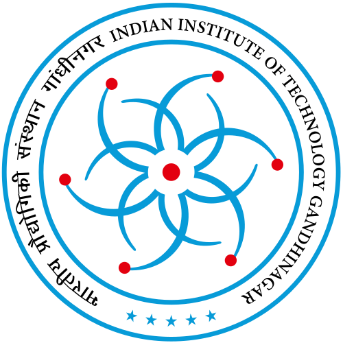

navigating the latent space of life
navigating the latent space of life
email · github · scholar · linkedin · cv
New Paper in JACS: chemical language models for MOF linker designabout
I'm Dhruv Menon, an applied Machine Learning Scientist and Research Engineer building generative AI systems for scientific discovery. My work combines foundation models, chemical language models, representation learning, flow-based generation, and physics-aware simulation workflows to navigate chemical design spaces and accelerate scientific discovery.
I'm completing my PhD (thesis submitted: Oct 2026) in Chemical Engineering at the University of Cambridge supervised by Prof. David Fairen-Jimenez. I build generative AI systems for the discovery & design of inorganic-organic materials called metal-organic frameworks for applications ranging from drug delivery to carbon capture & water harvesting. I also have interests in mechanistic underpinnings of performance, which I resolve using molecular simulations and statistical mechanics.
In 2025, I undertook a research fellowship at UC Berkeley with Prof. Omar Yaghi (Nobel Laureate, 2025), where I worked on generative materials discovery and automated laboratories. I earned my Master's by research (M.Res) in Physical Sciences (2023) from the Cavendish Laboratory, University of Cambridge and my Bachelors of Technology in Materials Sciences (2022) from the Indian Institute of Technology Gandhinagar

.Let's navigate the latent space together.move to explore · click to sample
interests
I have eclectic research interests, however, the central `theme' that connects everything is computation, rational design and accelerated scientific discovery. My interests include (in no particular order): de novo molecular design, language models, diffusion models, flow models, small-molecule discovery, protein design, metal-organic frameworks & supramolecular materials, physisorptive carbon capture, gas storage & separations, and drug delivery.
On a philosophical note, I'm NOT interested in incremental research (atleast not anymore). I tend to focus on moonshots, and would like to surround myself with people with the same mission & ambition.
research
Ongoing & recent
generative design
Inverse design of metal-organic frameworks
Developed Nexerra, a generative molecular design framework combining transformer-based chemical language models, variational autoencoders, and conditional flow matching for inverse molecular design. Developed representation learning methods for molecular embeddings, latent-space optimization, and conditional molecular generation under chemical validity, synthesizability, and physical design constraints. Implemented objective steering for end-to-end AI-guided materials discovery for adsorption, gas storage, water harvesting, and drug delivery.
Source: Menon et al., JACS, 2026
protein dynamics
Predicting protein conformations
Developing all-atom equivariant neural networks to accelerate molecular dynamics simulations and improve sampling of protein conformational landscapes. Exploring trajectory-learning approaches and protein foundation-model embeddings for predicting and generating alternative protein conformations.
Source: work in progress
drug delivery
Computational drug delivery & nanomedicine
Developed interpretable machine learning models to predict the biocompatibility of drug delivery systems, enabling high-throughput screening of ~100,000 experimentally reported materials for nanomedicine applications. Built a hierarchical virtual screening workflow to identify optimal drug carriers for chemotherapeutics. Discovered PCN-222 as a promising drug delivery platform, which was subsequently synthesized and tested in mouse models of pancreatic cancer, where the optimized formulation demonstrated reduced tumour growth and metastatic spread.
Source: Melle, Menon et al., Advanced Materials, 2024
proton transport
Confined proton transport
Developed multiscale simulation workflows integrating Grand Canonical Monte Carlo and molecular dynamics to investigate molecular transport, and proton-conduction mechanisms in functional porous materials. Studied diffusion, radial distribution functions, hydrogen-bond networks, velocity correlations, spatial distributions, and transport behaviour. Integrated molecular simulations with structural and experimental evidence to identify the mechanisms governing transport under nanoconfinement.
Source: Zhao, Li, Menon, Zhu et al., Nature Chemistry, 2026
papers
20+ peer-reviewed publications across materials chemistry, molecular simulation, and AI-guided materials design, including Nature Chemistry, Advanced Materials, Chem, Matter, and Chemical Society Reviews. 900+ citations; h-index 16. Full list on . ϕ denotes co-first authorship.
- 2026
- 2026
- 2025
- 2024
- 2024
The PhenoMenon
Essays & shortposts on AI, science & life.
- Soon
background
-
2023–26
phd
PhD in Chemical Engineering -
2025
fellowship
Winton Cambridge–Berkeley Exchange Fellowship -
2022–23
m.res
M.Res in Physical Sciences -
2020
fellowship
Summer Undergraduate Research Fellowship -
2018–22
b.tech
B.Tech in Materials Science